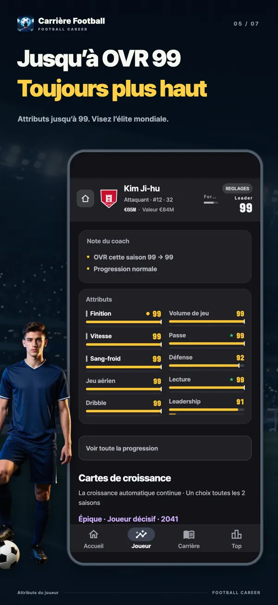
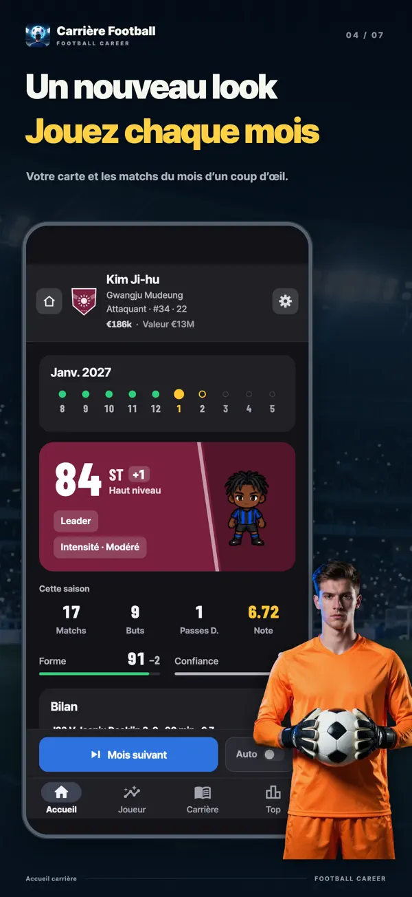
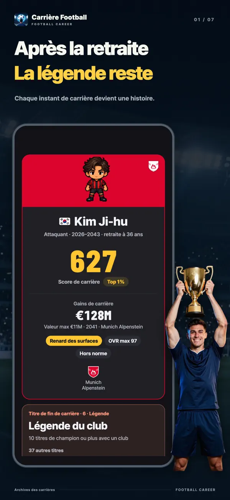
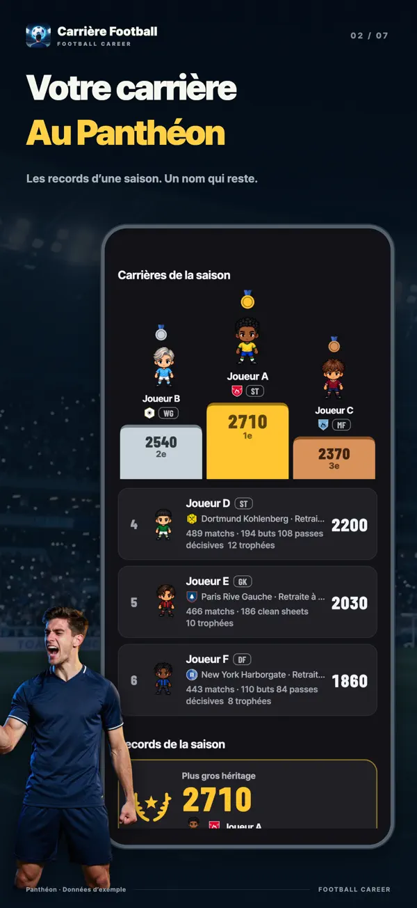
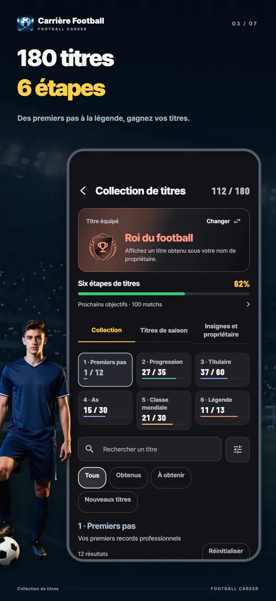
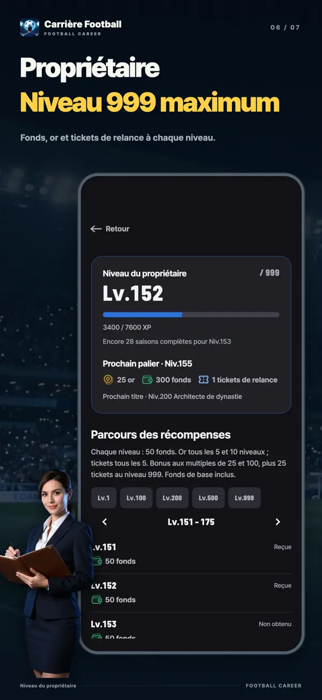
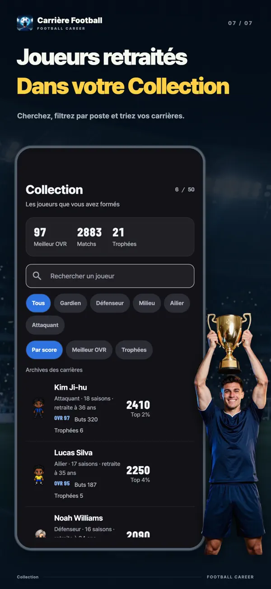

- YT Lab
- Simulateur Carrière Football

Simulateur Carrière Football Une carte peut changer votre carrière
Dans Simulateur Carrière Football, choisissez toutes les deux saisons une carte de croissance parmi trois de même rareté. Améliorer un attribut immédiatement, repousser un plafond caché ou remplir une condition pour décrocher une belle récompense ? Vivez la carrière d'un seul footballeur, de ses dix-sept ans au centre de formation jusqu'à sa retraite.
Choisissez votre prochaine croissance
Attaquant de 27 ans · OVR 96Chaque carte peut être retirée une fois. Sa rareté ne change pas.
Cette démo utilise les vraies cartes et les calculs de l'application. Elle recrée le moment où un attaquant vedette de 27 ans obtient une sélection Legend, la plus rare. Les nouveaux tirages et les cartes suivantes utilisent les mêmes possibilités et probabilités que le jeu. Chaque essai repart du même joueur.

Téléchargement gratuit, avec achats intégrés. Disponible sur iPhone et iPad sous iOS 15 ou version ultérieure, et sur Android 7.0 ou version ultérieure.
Toutes les deux saisons, une carte sur trois
Vos attributs progressent automatiquement au fil des matchs. Les cartes de croissance ajoutent des choix à cette progression. Au départ, puis toutes les deux saisons, trois cartes de même rareté et de familles différentes vous sont proposées : vous en gardez une. Plus la rareté est élevée, plus l'effet est fort. La première carte est forcément Épique.
Les cartes à effet immédiat
L'effet s'applique dès le choix. La concentration paie donne +6 à un attribut principal et +3 à son plafond. Combler les lacunes ajoute 4 au plus faible attribut principal et au plus faible attribut secondaire.
Les cartes qui repoussent vos limites
Chaque attribut possède un plafond caché où la progression automatique s'arrête. Un peu de potentiel, Potentiel ouvert et Percée de potentiel repoussent cette limite. Les cartes peuvent porter les plafonds jusqu'à 95.
Les cartes qui récompensent vos performances
Chasseur de buts donne +1 en Finition tous les 5 buts ; Star du match, +2 à un attribut tous les 2 MOM ; Prêt à décoller, +8 à un attribut principal après 30 matchs. La récompense se gagne sur le terrain.
Les cartes qui demandent un sacrifice
Sprint explosif offre +8 en Vitesse contre −3 en Jeu aérien. Talent diabolique donne +12 au plafond et +10 à un attribut principal, contre −3 à un attribut secondaire. Chaque avantage a sa contrepartie.
Les cartes qui prolongent votre carrière
Second apogée réduit le vieillissement de moitié pendant trois saisons et prolonge votre carrière de 2 ans. Dernière flamme donne +6 à trois attributs principaux, mais vous prenez votre retraite à la fin de cette saison.
Retirer une carte est gratuit
Une carte ne vous convient pas ? Retirez-la individuellement. Sa rareté reste identique et sa nouvelle famille sera différente de celles des deux autres cartes.
Du banc au titre de Joueur mondial de l'année
Vous ne débutez pas titulaire dans l'élite. Vous passez par la formation et la réserve, puis vous gagnez votre place depuis le banc de l'équipe première. Plus loin vous attend le titre de Joueur mondial de l'année, décerné au meilleur de chaque saison. Vos cartes et vos performances décident jusqu'où vous irez.
- 17ans
Centre de formation
Vous commencez à dix-sept ans au centre de formation. Le pack de départ en formation permet de débuter dès quinze ans.
- 19ans au plus tard
Équipe réserve
Vous rejoignez la réserve lorsque vous approchez du niveau de l'équipe première ou atteignez dix-neuf ans. La promotion se décide à la fin de la saison.
- 16–21débuts selon la ligue
Du banc de l'équipe première à une place de titulaire
L'âge des débuts varie selon la ligue. L'accès à l'équipe première dépend de votre âge, de vos attributs et de votre note de saison. La confiance de l'entraîneur détermine votre temps de jeu.
- Étéaprès la saison
Transferts et prolongations
Demandez un transfert ou choisissez parmi les offres. Avec votre agent, négociez le salaire, la Promesse de titulaire, la Clause libératoire et les autres conditions.
- 18+en équipe première
Équipe nationale
Les joueurs de l'équipe première âgés d'au moins dix-huit ans peuvent être convoqués en sélection. Le tournoi mondial et les tournois continentaux se succèdent en alternance tous les deux ans.
- 36–41selon le poste
Ce qui reste après la retraite
Par défaut, un Ailier joue jusqu'à 36 ans et un Gardien jusqu'à 41 ans. Les cartes et les événements peuvent prolonger la carrière ; vous pouvez aussi décider de vous arrêter plus tôt.
Jouez mois après mois. Progressez sur le terrain.
Une saison dure dix mois, d'août à mai, et compte 38 matchs. Apparitions, buts, passes décisives, matchs sans encaisser, MOM et notes alimentent votre progression du mois. Les chiffres montrent précisément ce qui a augmenté. Avancez mois par mois ou laissez le temps défiler automatiquement.
Progression du moisDribble 57 → 58 +1
Un grand mois peut vous valoir le Joueur du mois, une place dans l'Équipe du mois ou, pour un Gardien, l'Arrêt du mois. Seules vos performances comptent, sans tirage caché. En fin de saison, visez Meilleur buteur, Équipe type de la saison, Joueur de l'année, voire Joueur mondial de l'année.
Images du jeu







Une autre façon de vivre le football
Un joueur, pas un entraîneur
Pas de gestion d'effectif, de tableau tactique ni de budget de transferts. L'entraîneur décide de vos minutes. Lorsqu'il change, le profil qu'il recherche peut changer aussi.
Les probabilités sont affichées
Lors des situations rencontrées en saison, chaque choix affiche à l'avance les probabilités de ses trois issues, avec des barres et des pourcentages. Vous pouvez aussi voir comment vos attributs, la confiance de l'entraîneur, votre condition et vos cartes de croissance modifient ces chiffres.
À chaque ligue, sa carrière
De l'Angleterre, l'Espagne, l'Allemagne, l'Italie et la France à la Corée, au Japon et à l'Amérique du Sud. Chaque ligue a ses âges de début, salaires et quotas de joueurs étrangers. Tous les noms de ligues, clubs, joueurs et entraîneurs sont fictifs.
La carrière s'arrête. Les records restent.
Vos statistiques restent, avec une évaluation sur six axes : qualité, production, volume, récompenses, titres et scène. Vous découvrez votre place parmi 20 000 carrières simulées selon les règles du jeu. Les carrières terminées rejoignent les classements hebdomadaire, mensuel et général, ainsi que le Panthéon de la saison.
Questions fréquentes
- Le jeu est-il gratuit ?
- Vous pouvez télécharger le jeu et aller jusqu'à la retraite gratuitement. Les cartes de croissance et les nouveaux tirages sont aussi gratuits. Les achats facultatifs comprennent le retrait des publicités, le pack de postes, le pack de départ en formation, le pack de soutien, l'or et les tickets de relance. Les tirages d'attributs initiaux ont les mêmes probabilités, qu'ils soient gratuits, obtenus par publicité ou avec un ticket.
- Peut-on jouer sans connexion ?
- La carrière et la sauvegarde fonctionnent sur votre appareil : vous pouvez jouer hors ligne. Une connexion est nécessaire pour les classements, les achats, l'utilisation de l'or et le transfert vers un autre appareil.
- Peut-on jouer sur PC ou dans un navigateur ?
- C'est une application pour iPhone, iPad et Android. Il n'existe pas de version web jouable dans un navigateur ; cette page permet d'essayer les cartes de croissance.
- Quels postes peut-on choisir ?
- Gardien, Défenseur, Milieu, Ailier et Attaquant. Gardien et Attaquant sont gratuits ; le pack de postes débloque les trois autres. Chaque poste propose sept styles de jeu, soit 35 au total, tous gratuits.
- Combien de carrières peut-on mener à la fois ?
- Vous disposez de trois emplacements de carrière pour faire progresser trois joueurs en parallèle. La nationalité détermine la première ligue et l'équipe nationale.
- Y a-t-il de vrais joueurs ou clubs ?
- Non. Toutes les ligues, tous les clubs, joueurs et entraîneurs sont fictifs.
- Mon nom est-il publié au classement ?
- Les carrières terminées entrent au classement, mais vous pouvez désactiver cette option à tout moment. Les noms que vous avez modifiés ne sont publiés qu'avec votre accord.